Evaluating confidence predictor
Here, we evaluate our three confidence prediction methods and assess how well they match to poorly predicted data points.
[1]:
import re
import h5py
import matplotlib.pyplot as plt
import numpy as np
import onnxruntime as rt
import pandas as pd
import pingouin as pg
import seaborn as sns
import torch
from scipy import stats
from tcr_antigen_prediction.models import TCRStructMap
[2]:
sess_options = rt.SessionOptions()
sess_options.intra_op_num_threads = 1
sess_options.inter_op_num_threads = 1
[3]:
with h5py.File('data/processed/sequences_pMHC_split.h5') as fh:
cdr1_alphas = fh['cdr1_alpha'][:]
cdr2_alphas = fh['cdr2_alpha'][:]
cdr3_alphas = fh['cdr3_alpha'][:]
cdr1_betas = fh['cdr1_beta'][:]
cdr2_betas = fh['cdr2_beta'][:]
cdr3_betas = fh['cdr3_beta'][:]
peptides = fh['peptide'][:]
mhcs = fh['mhc_pseudo'][:]
folds = fh['fold'][:]
labels = fh['label'][:]
results = pd.DataFrame(
{
'cdr1_alpha': list(cdr1_alphas),
'cdr2_alpha': list(cdr2_alphas),
'cdr3_alpha': list(cdr3_alphas),
'cdr1_beta': list(cdr1_betas),
'cdr2_beta': list(cdr2_betas),
'cdr3_beta': list(cdr3_betas),
'peptide': list(peptides),
'mhc': list(mhcs),
'fold': folds,
'label': labels,
'index': np.arange(labels.shape[0]),
}
)
[4]:
indices = np.arange(len(labels))
[ ]:
with open('data/logs/train_confidence_predictor_pMHC_split.log') as fh:
training_log = fh.read()
[6]:
match = re.search(r'INFO: Test indices: \[([(np.int64\(\d+\)),\s]+)\]', training_log)
distance_regressor_test_indices = np.array(
[int(re.search(r'\((\d+)\)', entry).group(1)) for entry in re.findall(r'np.int64\(\d+\)', match.group(1))]
)
[7]:
tcr_pmhcs = np.concatenate(
[cdr1_alphas, cdr2_alphas, cdr3_alphas, cdr1_betas, cdr2_betas, cdr3_betas, peptides, mhcs], axis=1
)
tcr_pmhcs_flat = tcr_pmhcs.reshape(tcr_pmhcs.shape[0], -1)
[ ]:
fold_results = []
NUM_CONFIDENCE_PREDICTIONS = 5
for fold_num in range(1, 5 + 1):
print('Fold:', fold_num)
fold_predictions = results.loc[distance_regressor_test_indices].copy()
fold_predictions['holdout_fold'] = fold_num
print('Loading model')
model = TCRStructMap(drop_out_rate=0.6)
model.load_state_dict(
torch.load(
f'models/TCRStructMap_pMHC_split/model_{fold_num}.pt',
map_location=torch.device('cpu'),
weights_only=True,
)
)
print('Making predictions')
model.eval()
predictions = model(
torch.tensor(cdr1_alphas[distance_regressor_test_indices], dtype=torch.float32),
torch.tensor(cdr2_alphas[distance_regressor_test_indices], dtype=torch.float32),
torch.tensor(cdr3_alphas[distance_regressor_test_indices], dtype=torch.float32),
torch.tensor(cdr1_betas[distance_regressor_test_indices], dtype=torch.float32),
torch.tensor(cdr2_betas[distance_regressor_test_indices], dtype=torch.float32),
torch.tensor(cdr3_betas[distance_regressor_test_indices], dtype=torch.float32),
torch.tensor(peptides[distance_regressor_test_indices], dtype=torch.float32),
torch.tensor(mhcs[distance_regressor_test_indices], dtype=torch.float32),
)
fold_predictions['prediction'] = predictions.squeeze(-1).detach().cpu().numpy()
print('Making confidence prediction')
model.train()
for i in range(NUM_CONFIDENCE_PREDICTIONS):
print(i + 1, 'of', NUM_CONFIDENCE_PREDICTIONS)
confidence_prediction = model(
torch.tensor(cdr1_alphas[distance_regressor_test_indices], dtype=torch.float32),
torch.tensor(cdr2_alphas[distance_regressor_test_indices], dtype=torch.float32),
torch.tensor(cdr3_alphas[distance_regressor_test_indices], dtype=torch.float32),
torch.tensor(cdr1_betas[distance_regressor_test_indices], dtype=torch.float32),
torch.tensor(cdr2_betas[distance_regressor_test_indices], dtype=torch.float32),
torch.tensor(cdr3_betas[distance_regressor_test_indices], dtype=torch.float32),
torch.tensor(peptides[distance_regressor_test_indices], dtype=torch.float32),
torch.tensor(mhcs[distance_regressor_test_indices], dtype=torch.float32),
)
fold_predictions[f'confidence_prediction_{i}'] = confidence_prediction.squeeze(-1).detach().cpu().numpy()
print('Making confidence prediction from regressor')
sess = rt.InferenceSession(
f'models/ConfidencePredictor_pMHC_split/model_{fold_num}.onnx', sess_options=sess_options
)
input_name = sess.get_inputs()[0].name
label_name = sess.get_outputs()[0].name
confidence, *_ = sess.run(None, {'X': tcr_pmhcs_flat[distance_regressor_test_indices].astype(np.float32)})
fold_predictions['confidence_distance_regressor'] = confidence.squeeze(-1)
fold_results.append(fold_predictions)
print('Finished fold')
results = pd.concat(fold_results).reset_index(drop=True)
Fold: 1
Loading model
Making predictions
Making confidence prediction
1 of 5
2 of 5
3 of 5
4 of 5
5 of 5
Making confidence prediction from regressor
Finished fold
Fold: 2
Loading model
Making predictions
Making confidence prediction
1 of 5
2 of 5
3 of 5
4 of 5
5 of 5
Making confidence prediction from regressor
Finished fold
Fold: 3
Loading model
Making predictions
Making confidence prediction
1 of 5
2 of 5
3 of 5
4 of 5
5 of 5
Making confidence prediction from regressor
Finished fold
Fold: 4
Loading model
Making predictions
Making confidence prediction
1 of 5
2 of 5
3 of 5
4 of 5
5 of 5
Making confidence prediction from regressor
Finished fold
Fold: 5
Loading model
Making predictions
Making confidence prediction
1 of 5
2 of 5
3 of 5
4 of 5
5 of 5
Making confidence prediction from regressor
Finished fold
[9]:
THRESHOLD = 0.5
results['prediction_binary'] = (results['prediction'] > THRESHOLD).apply(int)
[10]:
results['residual_abs'] = np.abs(results['label'] - results['prediction'])
results['residual_squared'] = (results['label'] - results['prediction']) ** 2
[11]:
results['correct'] = results['prediction_binary'] == results['label']
[12]:
results['in_training_data'] = results['fold'] != results['holdout_fold']
[13]:
ax = sns.barplot(
results.groupby('in_training_data')['correct']
.value_counts(normalize=True)
.mul(100)
.rename('Percent')
.reset_index(),
x='correct',
y='Percent',
hue='in_training_data',
)
ax.legend_.set_title('In Training Data?')
plt.xlabel('Correct Prediction?', fontsize=12)
plt.ylabel('Percent', fontsize=12)
plt.show()
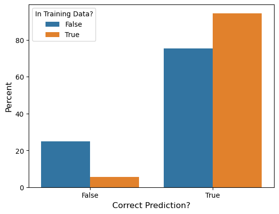
[14]:
sequences = pd.read_csv('data/interim/sequences_pMHC_split.csv', index_col='index')
peptide_sequences = sequences['peptide']
peptide_sequences.name = 'peptide_sequence'
peptide_sequences = peptide_sequences.to_frame()
[15]:
results = results.merge(peptide_sequences, how='left', left_on='index', right_index=True)
[16]:
with open('data/interim/peptides.txt') as fh:
peptide_key = np.array(fh.read().rstrip().split('\n'))
peptide_distances = np.loadtxt('data/interim/peptide_distances.txt', dtype=int)
[17]:
def get_minimum_peptide_distance(peptide_sequence: str, training_peptides: np.ndarray) -> int:
if peptide_sequence not in peptide_key:
return np.nan
training_key_idxs = np.where(np.isin(peptide_key, training_peptides))[0]
peptide_index = np.where(peptide_sequence == peptide_key)[0][0]
return np.min(peptide_distances[peptide_index][training_key_idxs])
[18]:
peptide_folds = results[['peptide_sequence', 'fold']].drop_duplicates()
peptide_folds['min_peptide_distance'] = peptide_folds.apply(
lambda row: get_minimum_peptide_distance(
row.peptide_sequence, sequences[sequences['fold'] != row.fold]['peptide'].unique()
),
axis=1,
)
[19]:
results = results.merge(peptide_folds, how='left', on=['peptide_sequence', 'fold'])
Confidence from Logits
[20]:
results['confidence_logits'] = np.max(np.stack([1 - results['prediction'], results['prediction']], axis=1), axis=1)
[21]:
results['confidence_logits'].plot.hist()
plt.title('Distribution of confidence scores from logits', fontsize=16)
plt.xlabel('Confidence', fontsize=12)
plt.ylabel('Frequency', fontsize=12)
plt.show()
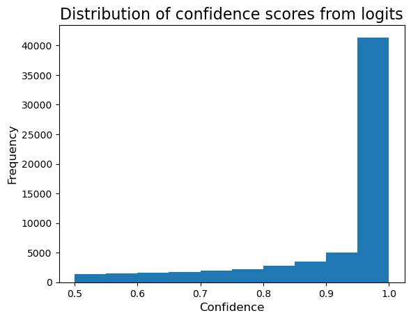
[22]:
sns.boxplot(results, y='confidence_logits', x='correct')
plt.title('Confidence score from Logits', fontsize=16)
plt.xlabel('Correct Prediction?', fontsize=12)
plt.ylabel('Confidence', fontsize=12)
plt.show()
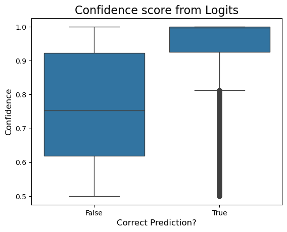
[23]:
sns.boxplot(results, y='confidence_logits', x='in_training_data')
plt.title('Confidence score from Logits', fontsize=16)
plt.xlabel('In Training Data?', fontsize=12)
plt.ylabel('Confidence', fontsize=12)
plt.show()
[24]:
results['confidence_logits_scaled'] = 2 * results['confidence_logits'] - 1
[25]:
results['confidence_logits_scaled'].plot.hist()
plt.title('Distribution of confidence scores from logits after scaling', fontsize=16)
plt.xlabel('Confidence', fontsize=12)
plt.ylabel('Frequency', fontsize=12)
plt.show()
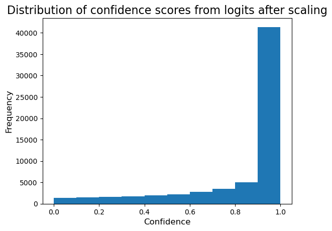
[26]:
ax = sns.histplot(
results,
x='confidence_logits_scaled',
hue='in_training_data',
stat='probability',
common_norm=False,
multiple='stack',
binwidth=0.1,
)
plt.title('Distribution of confidence scores from logits after scaling', fontsize=16)
plt.xlabel('Confidence', fontsize=12)
plt.ylabel('Probability', fontsize=12)
ax.legend_.set_title('In Trainining Data?')
plt.show()
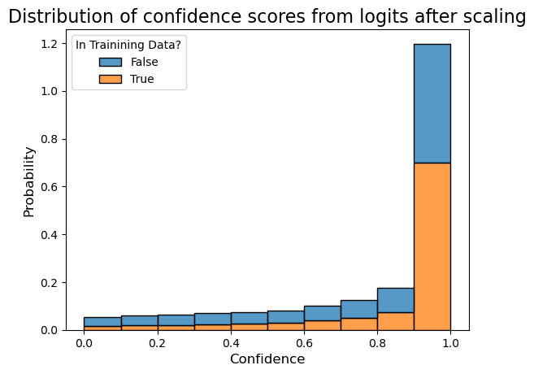
[27]:
sns.boxplot(results, y='confidence_logits_scaled', x='correct')
plt.title('Confidence score from Logits', fontsize=16)
plt.xlabel('Correct?', fontsize=12)
plt.ylabel('Confidence', fontsize=12)
plt.show()
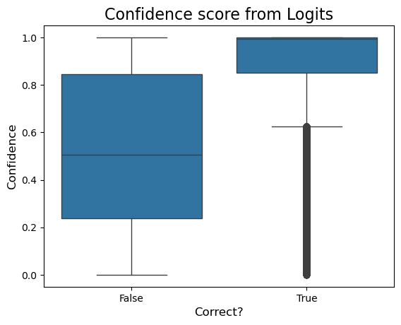
[28]:
sns.boxplot(results, y='confidence_logits_scaled', x='in_training_data')
plt.title('Confidence score from Logits', fontsize=16)
plt.xlabel('In Training Data?', fontsize=12)
plt.ylabel('Confidence', fontsize=12)
plt.show()
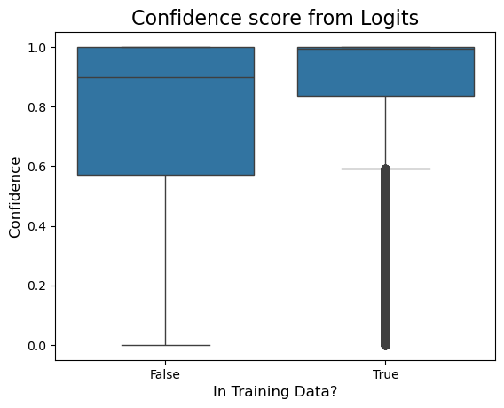
[29]:
sns.lmplot(results.sample(500, random_state=123), x='residual_abs', y='confidence_logits_scaled')
plt.title('Confidence score from Logits', fontsize=16)
plt.xlabel(r'$|\text{Residual}|$', fontsize=12)
plt.ylabel('Confidence', fontsize=12)
plt.show()
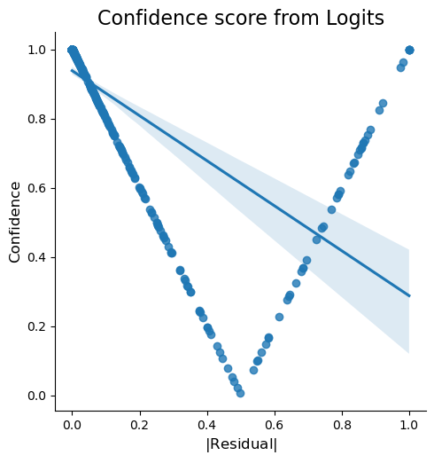
[30]:
sns.lmplot(results.sample(500, random_state=123), x='residual_squared', y='confidence_logits_scaled')
plt.title('Confidence score from Logits', fontsize=16)
plt.xlabel(r'$\text{Residual}^2$', fontsize=12)
plt.ylabel('Confidence', fontsize=12)
plt.show()
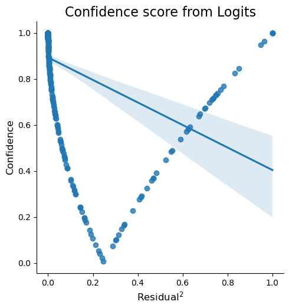
Confidence from Monte-Carlo dropout
[31]:
prediction_std = results.filter(regex=r'confidence_prediction_\d').apply(np.std, axis=1)
[32]:
prediction_std.plot.hist()
plt.title('Standard deviation of MC dropout predictions', fontsize=16)
plt.xlabel('Standard Deviation', fontsize=12)
plt.ylabel('Frequency', fontsize=12)
plt.show()
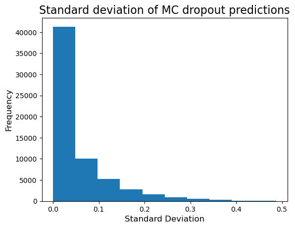
[33]:
confidence_prediction = 1 - prediction_std / prediction_std.max()
[34]:
confidence_prediction.plot.hist()
plt.title('Distribution of confidence scores from MC dropout predictions', fontsize=16)
plt.xlabel('Confidence', fontsize=12)
plt.ylabel('Frequency', fontsize=12)
plt.show()
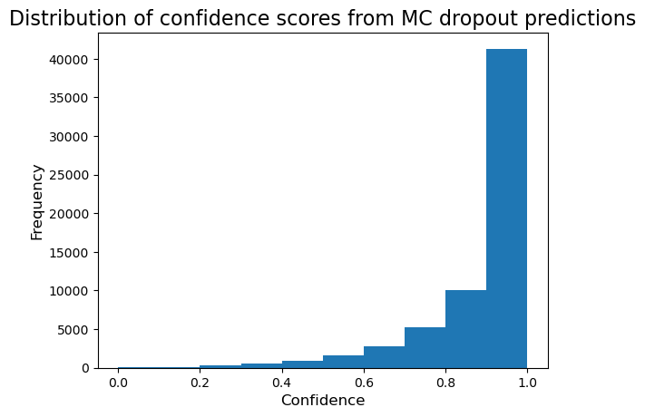
[35]:
results['confidence_mc_dropout'] = confidence_prediction
[36]:
ax = sns.histplot(
results,
x='confidence_mc_dropout',
hue='in_training_data',
stat='probability',
common_norm=False,
multiple='stack',
binwidth=0.1,
)
plt.title('Distribution of confidence scores from MC dropout predictions', fontsize=16)
plt.xlabel('Confidence', fontsize=12)
plt.ylabel('Probability', fontsize=12)
ax.legend_.set_title('In Training Data?')
plt.show()
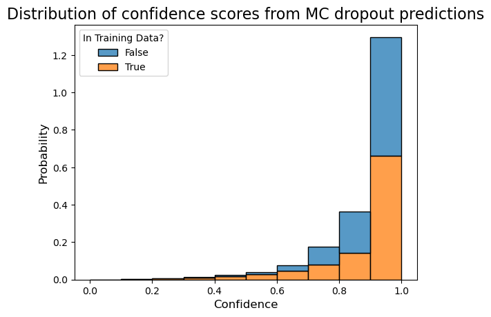
[37]:
sns.boxplot(results, x='correct', y='confidence_mc_dropout')
plt.title('Confidence predictions from MC dropout predictions', fontsize=16)
plt.xlabel('Correct?', fontsize=12)
plt.ylabel('Confidence', fontsize=12)
plt.show()
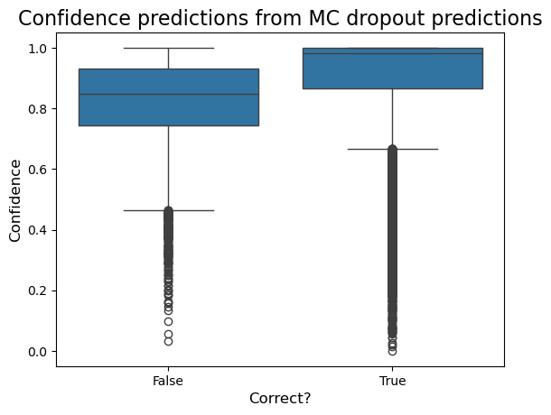
[38]:
sns.boxplot(results, x='in_training_data', y='confidence_mc_dropout')
plt.title('Confidence predictions from MC dropout predictions', fontsize=16)
plt.xlabel('In Training Data?', fontsize=12)
plt.ylabel('Confidence', fontsize=12)
plt.show()
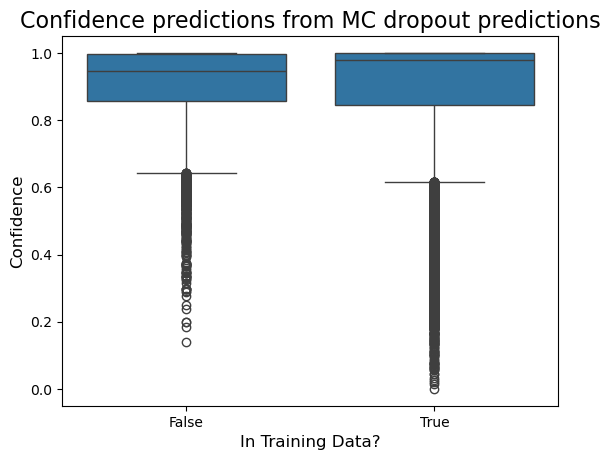
[39]:
sns.lmplot(results.sample(500, random_state=123), x='residual_abs', y='confidence_mc_dropout')
plt.title('Confidence score from MC dropout predictions', fontsize=16)
plt.xlabel(r'$|\text{Residual}|$', fontsize=12)
plt.ylabel('Confidence', fontsize=12)
plt.show()
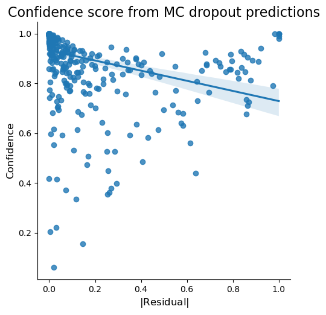
[40]:
sns.lmplot(results.sample(500, random_state=123), x='residual_squared', y='confidence_mc_dropout')
plt.title('Confidence score from MC dropout predictions', fontsize=16)
plt.xlabel(r'$\text{Residual}^2$', fontsize=12)
plt.ylabel('Confidence', fontsize=12)
plt.show()
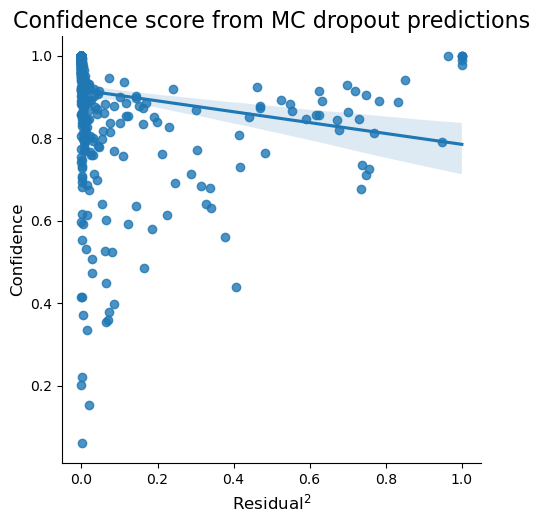
Distance Based Regressor
[41]:
sns.boxplot(results, x='correct', y='confidence_distance_regressor')
plt.title('Confidence from distance regressor', fontsize=16)
plt.xlabel('Correct?', fontsize=12)
plt.ylabel('Confidence', fontsize=12)
plt.show()
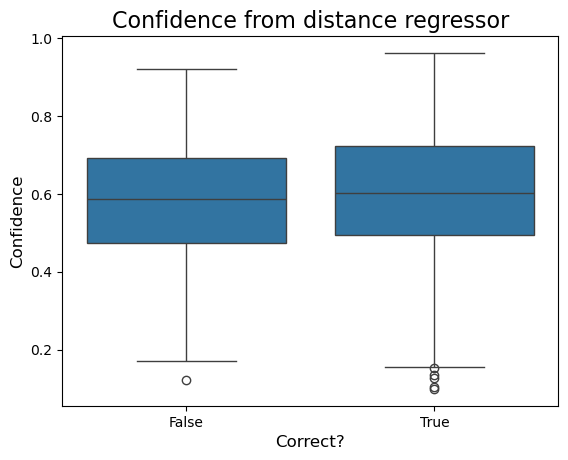
[42]:
sns.boxplot(results, x='in_training_data', y='confidence_distance_regressor')
plt.title('Confidence from distance regressor', fontsize=16)
plt.xlabel('In Training Data?', fontsize=12)
plt.ylabel('Confidence', fontsize=12)
plt.show()
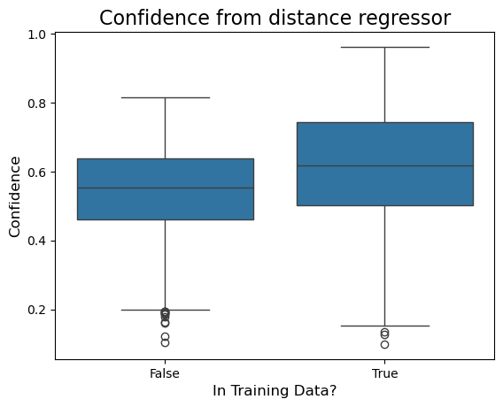
[43]:
sns.lmplot(results.sample(500, random_state=123), x='residual_abs', y='confidence_distance_regressor')
plt.title('Confidence scores from distance regressor', fontsize=16)
plt.xlabel(r'$|\text{Residual}|$', fontsize=12)
plt.ylabel('Confidence', fontsize=12)
plt.show()
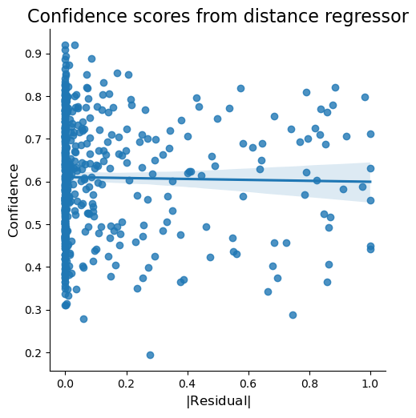
[44]:
sns.lmplot(results.sample(500, random_state=123), x='residual_squared', y='confidence_distance_regressor')
plt.title('Confidence scores from distance regressor', fontsize=16)
plt.xlabel(r'$\text{Residual}^2$', fontsize=12)
plt.ylabel('Confidence', fontsize=12)
plt.show()
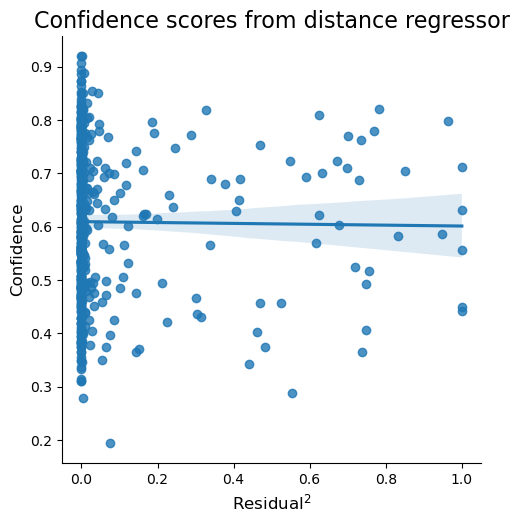
Comparison between approaches
Correlation
[45]:
sns.lmplot(results.sample(500, random_state=123), x='confidence_logits_scaled', y='confidence_mc_dropout')
plt.title('Correlation between confidence prediction methods', fontsize=16)
plt.xlabel('Confidence Prediction from Logits', fontsize=12)
plt.ylabel('Confidence Prediction from MC dropout prediction', fontsize=12)
plt.show()
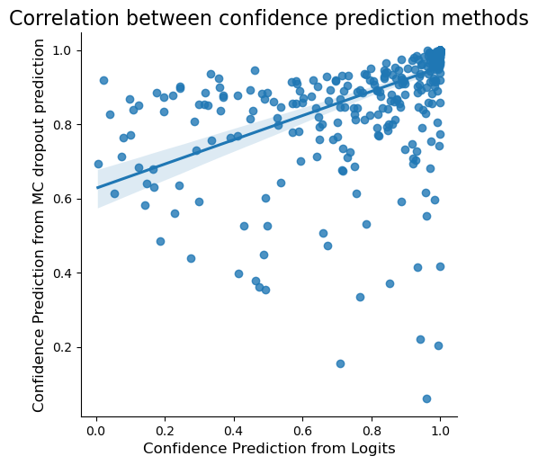
[46]:
sns.lmplot(results.sample(500, random_state=123), x='confidence_logits_scaled', y='confidence_distance_regressor')
plt.title('Correlation between confidence prediction methods', fontsize=16)
plt.xlabel('Confidence Prediction from Logits', fontsize=12)
plt.ylabel('Confidence Prediction from distance regressor', fontsize=12)
plt.show()
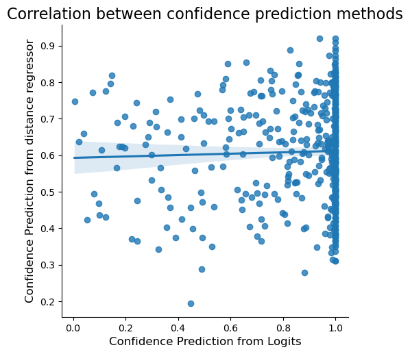
[47]:
sns.lmplot(results.sample(500, random_state=123), x='confidence_mc_dropout', y='confidence_distance_regressor')
plt.title('Correlation between confidence prediction methods', fontsize=16)
plt.xlabel('Confidence Prediction from MC dropout prediction', fontsize=12)
plt.ylabel('Confidence Prediction from distance regressor', fontsize=12)
plt.show()
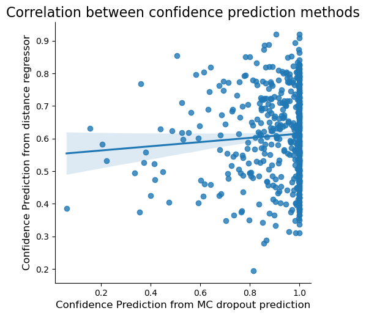
Comparison
[48]:
results_long = results.melt(
id_vars=[
'cdr1_alpha',
'cdr2_alpha',
'cdr3_alpha',
'cdr1_beta',
'cdr2_beta',
'cdr3_beta',
'peptide',
'mhc',
'fold',
'label',
'holdout_fold',
'prediction',
'prediction_binary',
'in_training_data',
'correct',
'min_peptide_distance',
],
value_vars=['confidence_logits', 'confidence_mc_dropout', 'confidence_distance_regressor'],
var_name='method',
value_name='confidence',
)
[49]:
def transform_method_name(name: str) -> str:
new_name = name.replace('_', ' from ', 1)
new_name = new_name.replace('_', ' ')
new_name = new_name.title()
new_name = new_name.replace('Mc', 'MC')
return new_name
[50]:
plt.figure(figsize=(10, 8))
ax = sns.boxplot(results_long, x='correct', y='confidence', hue='method')
plt.title('Comparison of confidence prediction methods')
plt.xlabel('Correct?', fontsize=12)
plt.ylabel('Confidence', fontsize=12)
ax.legend_.set_title('Method')
for text in ax.legend_.get_texts():
text.set_text(transform_method_name(text.get_text()))
plt.show()
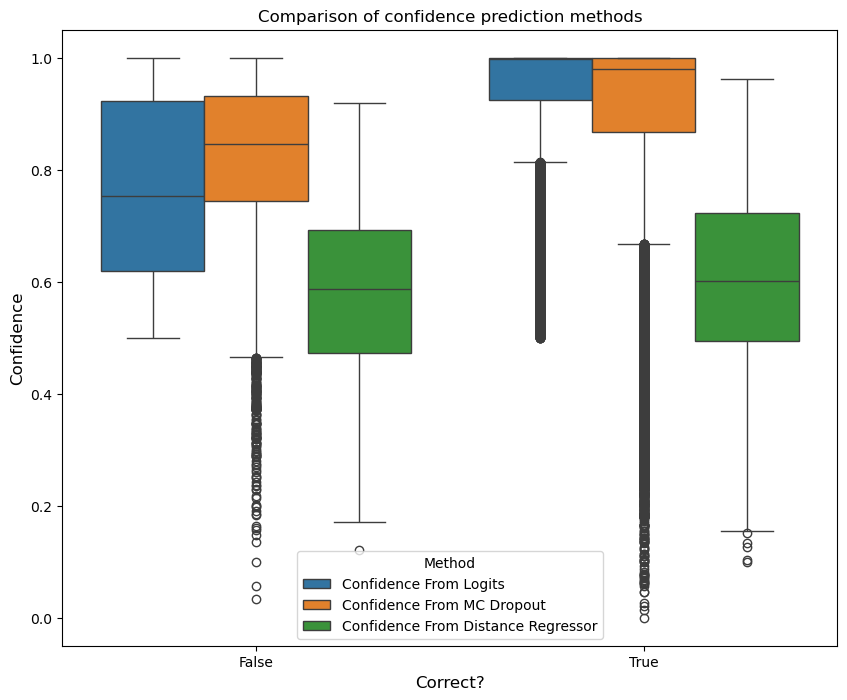
[51]:
plt.figure(figsize=(10, 8))
ax = sns.boxplot(results_long, x='in_training_data', y='confidence', hue='method')
plt.title('Comparison of confidence prediction methods')
plt.xlabel('In Training Data?', fontsize=12)
plt.ylabel('Confidence', fontsize=12)
ax.legend_.set_title('Method')
for text in ax.legend_.get_texts():
text.set_text(transform_method_name(text.get_text()))
plt.show()
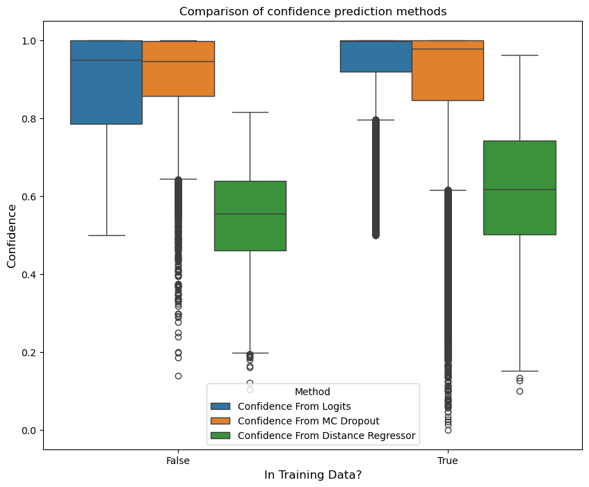
[52]:
grid = sns.lmplot(results_long, x='min_peptide_distance', y='confidence', hue='method')
for method in results_long['method'].unique():
subset = results_long[results_long['method'] == method].dropna()
slope, intercept, r_value, p_value, std_err = stats.linregress(subset['min_peptide_distance'], subset['confidence'])
equation = f'y = {slope:.2f}x + {intercept:.2f}'
x_pos = subset['min_peptide_distance'].max() + 0.25
y_pos = slope * x_pos + intercept
plt.text(x_pos, y_pos, equation, color='black')
plt.title('Comparison of confidence prediction methods')
plt.xlabel('Minimum levenshtein distance to a peptide in the training data', fontsize=12)
plt.ylabel('Confidence', fontsize=12)
grid.figure.set_size_inches(12, 6)
grid.legend.set_title('Method')
grid.legend.set_loc('upper right')
for text in grid.legend.get_texts():
text.set_text(transform_method_name(text.get_text()))
plt.show()
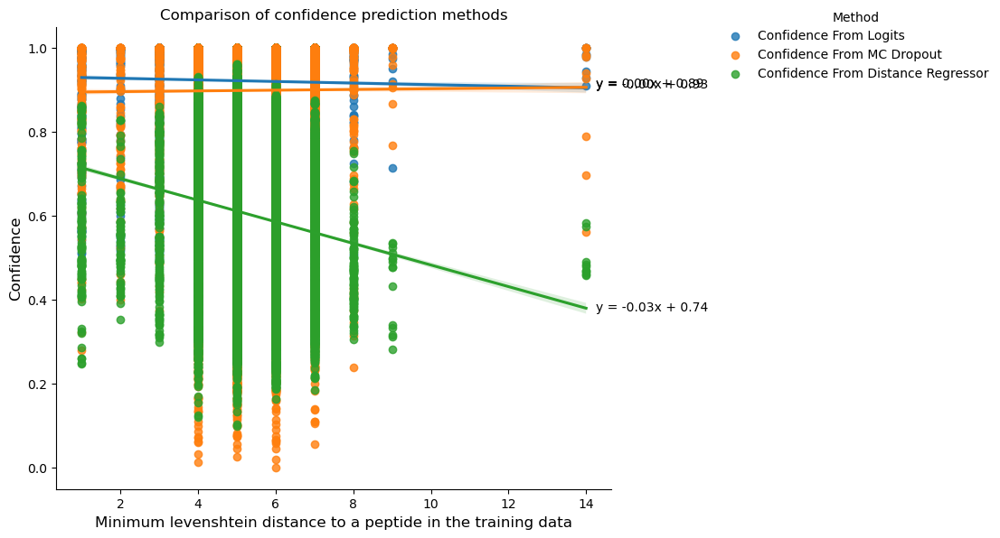
[53]:
lines = (
results_long.dropna()
.groupby(['method', 'fold'])
.apply(
lambda group: stats.linregress(group['min_peptide_distance'], group['confidence']),
include_groups=False,
)
)
lines.name = 'line'
lines = lines.reset_index()
lines[['slope', 'intercept', 'r_value', 'p_value', 'std_err']] = lines['line'].apply(pd.Series)
[54]:
sns.boxplot(x=lines['method'].apply(transform_method_name), y=lines['slope'])
plt.title(r'Comparison of slopes of $\frac{\text{Confidence}}{\text{Minimum levenshtein distance}}$')
plt.ylabel('Slope', fontsize=12)
plt.xlabel('Method', fontsize=12)
plt.xticks(rotation=45, ha='right')
plt.show()
lines_agg = lines.groupby('method')['slope'].agg(['mean', 'median', 'std'])
lines_agg.index = lines_agg.index.map(transform_method_name)
lines_agg
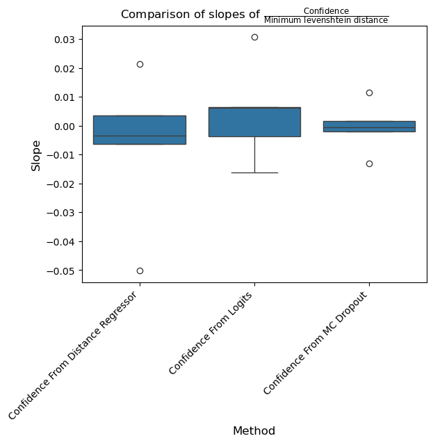
[54]:
| mean | median | std | |
|---|---|---|---|
| method | |||
| Confidence From Distance Regressor | -0.007013 | -0.003482 | 0.026436 |
| Confidence From Logits | 0.004694 | 0.006051 | 0.017169 |
| Confidence From MC Dropout | -0.000551 | -0.000642 | 0.008802 |
[55]:
pg.friedman(lines, dv='slope', within='method', subject='fold', method='f')
[55]:
| Source | W | ddof1 | ddof2 | F | p-unc | |
|---|---|---|---|---|---|---|
| Friedman | method | 0.12 | 1.6 | 6.4 | 0.545455 | 0.567201 |